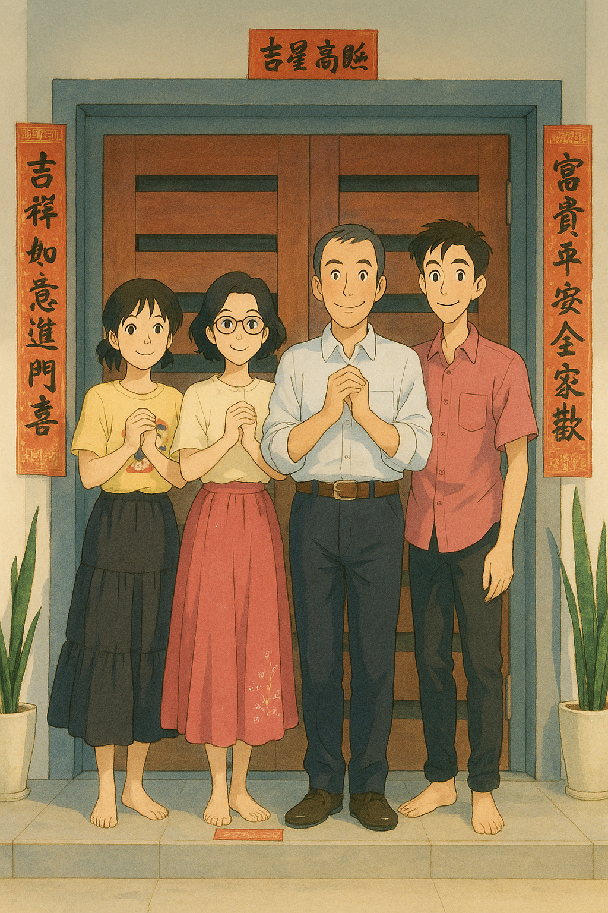

|  |
This is my family members.
Yup, the picture as you see, my family just only 4 members including me.
You may think it will be very boring right, instead it's not.
We know each others very well, plus we lead our hand to help each others faced their problems.
It's very easy to heard the laughing sound between us. |
Sister

|
This, is my young sister. A very sportive person.
In shool she played, basketball, pingpong, handball, volyball, track and field and more.
This year is ready been cooked by SPM, hahaha. GOOD LUCK. |